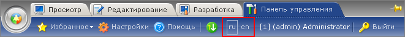

Одной из важных особенностей продукта «1C-Битрикс: Управление сайтом» является поддержка произвольного количества языков. Система позволяет:
Управление языками административного интерфейса системы осуществляется в форме Языки: Настройки -> Настройки продукта -> Языки интерфейса.
Список языков в форме определяет, на каких языках будет доступно отображение системных текстовых сообщений: информационных сообщений, сообщений об ошибках, заголовков таблиц, надписей на кнопках управления и т.д.
Выбор текущего языка административного раздела сайта осуществляется с помощью меню на административной панели:

Разработчики могут получить подробную информацию о языках в разделе Языки сайта.
| Кнопка | Описание |
|---|---|
| Добавить язык | Переход к форме создания записи о новом языке. |
| Excel | Экспортирует данные из отображаемой таблицы в формат MS Excel. |
| Настроить | Позволяет перейти к диалогу настройки внешнего вида отчетной формы. |
| Поле | Описание |
|---|---|
| Колонка флажков | Поле предназначено для выбора языков, к которым предполагается применить какое-либо правило или действие. |
| Действия | Операции с языком:
|
| ID | Идентификатор языка. |
| Акт. | Признак активности. Если язык не активен, то отображение сообщений на данном языке недоступно. |
| Сорт. | Относительный вес, определяющий положение языка в списке. |
| Название | Произвольное название языка. |
| По умолчан. | Признак использования языка по умолчанию. При открытии сайта все языковые сообщения будут именно на этом языке. |
| © «Битрикс», 2001-2008, «1C-Битрикс», 2008 | 1С-Битрикс: Управление сайтом |